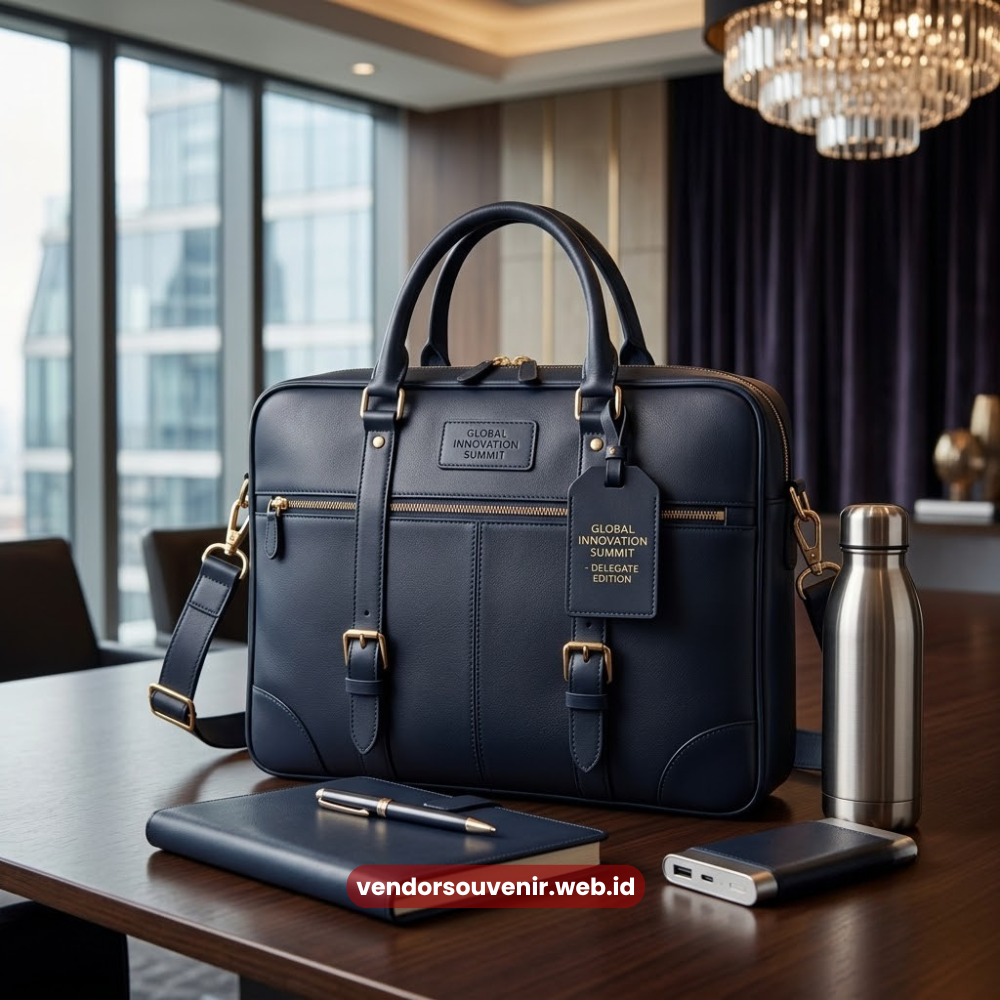
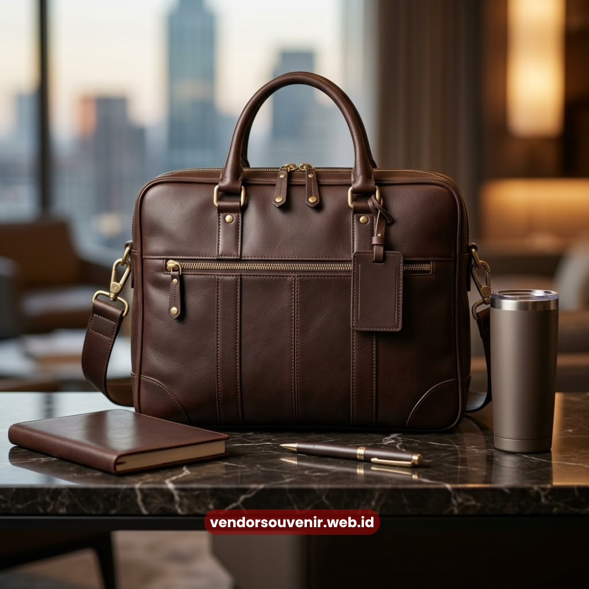

Daftar Isi
Manfaat tas seminar kit custom bagi branding perusahaan meliputi peningkatan visibilitas logo, penguatan kesan profesional, dan perpanjangan durasi eksposur brand setelah acara selesai.
Tas ini berfungsi ganda sebagai perlengkapan praktis sekaligus media promosi berjalan bagi perusahaan.
- Meningkatkan visibilitas logo perusahaan selama dan setelah acara.
- Memperkuat kesan profesional di mata peserta dan mitra bisnis.
- Menjadi media promosi berjalan tanpa biaya iklan tambahan.
- Menambah nilai fungsional bagi peserta di luar konteks acara.
- Mendukung konsistensi identitas visual perusahaan pada setiap event.
Apa Manfaat Utama Tas Seminar Kit Custom bagi Perusahaan?
Manfaat utama tas seminar kit custom bagi perusahaan adalah meningkatkan visibilitas brand
melalui logo yang terpasang pada tas yang digunakan peserta selama dan setelah acara
berlangsung.
Selain fungsi promosi, tas ini juga memberikan kesan rapi dan terorganisir terhadap
penyelenggaraan acara.
Manfaat ini menjadi semakin signifikan ketika tas digunakan kembali oleh peserta dalam aktivitas sehari-hari, sehingga logo perusahaan terus terekspos kepada lingkungan sosial peserta di luar konteks acara semula.
Bagaimana Tas Seminar Kit Custom Memperkuat Identitas Visual?
Tas seminar kit custom memperkuat identitas visual perusahaan melalui konsistensi penggunaan
warna, logo, dan elemen desain yang selaras dengan panduan brand pada setiap acara.
Konsistensi ini membantu peserta mengenali dan mengingat brand perusahaan secara lebih efektif.
Ketika elemen visual ini diterapkan secara berulang pada berbagai acara, peserta dan mitra bisnis akan semakin familiar dengan identitas perusahaan, yang pada akhirnya turut membangun kepercayaan dan loyalitas terhadap brand.
Mengapa Konsistensi Desain Penting dalam Branding?
Konsistensi desain penting karena membantu audiens mengasosiasikan elemen visual tertentu secara
langsung dengan brand perusahaan tanpa memerlukan penjelasan tambahan.
Konsistensi ini membangun pengenalan brand yang lebih kuat dibandingkan penggunaan desain yang
berubah-ubah pada setiap acara.

Tas Seminar Kit sebagai Media Promosi
Apakah Tas Seminar Kit Custom Efektif sebagai Media Promosi?
Tas seminar kit custom efektif sebagai media promosi karena menjangkau audiens secara langsung
tanpa biaya iklan berkelanjutan, sekaligus memberikan nilai fungsional yang membuat peserta
cenderung menyimpan dan menggunakannya kembali.
Berbagai praktik dalam industri MICE menunjukkan souvenir fungsional cenderung lebih lama
disimpan dibandingkan materi promosi cetak biasa seperti brosur.
Efektivitas ini semakin tinggi ketika desain tas dibuat menarik dan sesuai kebutuhan sehari-hari peserta, sehingga tas tidak hanya digunakan sekali saat acara namun berlanjut dalam aktivitas rutin peserta setelahnya.
Bagaimana Tas Seminar Kit Custom Meningkatkan Kesan Profesional Acara?
Tas seminar kit custom meningkatkan kesan profesional acara melalui tampilan yang rapi,
terorganisir, dan konsisten dengan identitas brand penyelenggara sejak momen registrasi
peserta.
Kesan pertama ini turut memengaruhi persepsi peserta terhadap kredibilitas dan kualitas
keseluruhan acara.
Selain itu, seminar kit yang tertata rapi dalam satu tas custom memudahkan peserta mengakses materi acara tanpa kebingungan, yang secara tidak langsung turut mendukung kelancaran jalannya acara.
Apa Manfaat Jangka Panjang bagi Perusahaan?
Manfaat jangka panjang tas seminar kit custom bagi perusahaan meliputi terbangunnya kesadaran
brand yang berkelanjutan serta terciptanya kesan positif yang dapat memengaruhi keputusan kerja
sama di masa mendatang.
Souvenir yang berkualitas turut mencerminkan standar profesionalisme perusahaan kepada mitra
bisnis maupun instansi terkait.
Ketika manfaat ini dikelola secara konsisten pada setiap acara, perusahaan berpotensi membangun citra brand yang lebih kuat dan mudah diingat dibandingkan kompetitor yang tidak memberikan perhatian serupa terhadap detail souvenir korporat.

Optimalkan Manfaat Branding Melalui Tas Seminar Kit Custom Berkualitas
Memaksimalkan manfaat tas seminar kit custom bagi branding perusahaan memerlukan perhatian terhadap kualitas bahan, desain, dan konsistensi identitas visual pada setiap acara.
Butuh Bantuan Merancang Tas Seminar Kit Custom?
Tim ahli kami siap membantu Anda menyusun paket seminar eksklusif yang menarik.
Pilihan barang akan disesuaikan dengan ketersediaan budget dan kebutuhan Anda.
Seluruh desain tas akan kami selaraskan dengan identitas visual perusahaan Anda.
Dapatkan penawaran harga terbaik untuk pesanan massal!
Maroon Souvenir
Partner Corporate Gift terpercaya di Indonesia. Berpengalaman melayani ratusan perusahaan sejak 2018.
Lihat Portofolio Kami